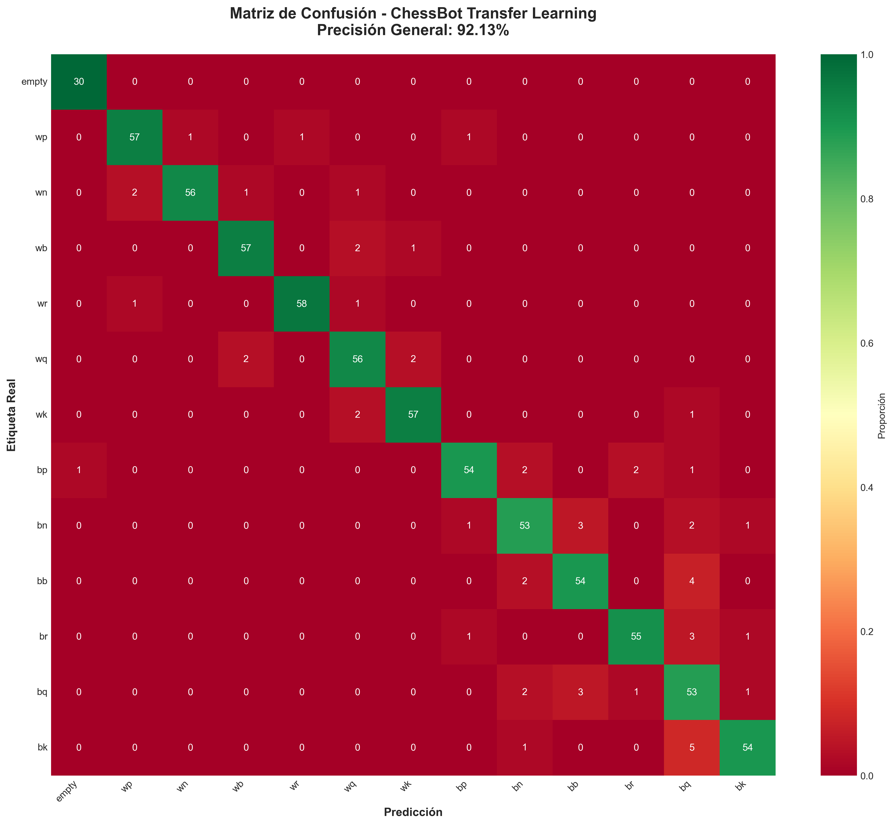
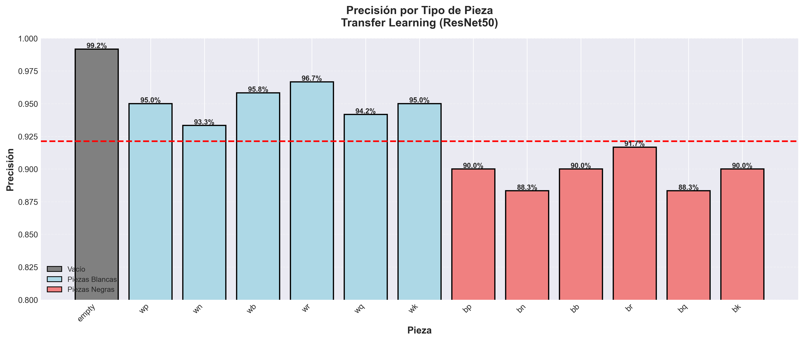
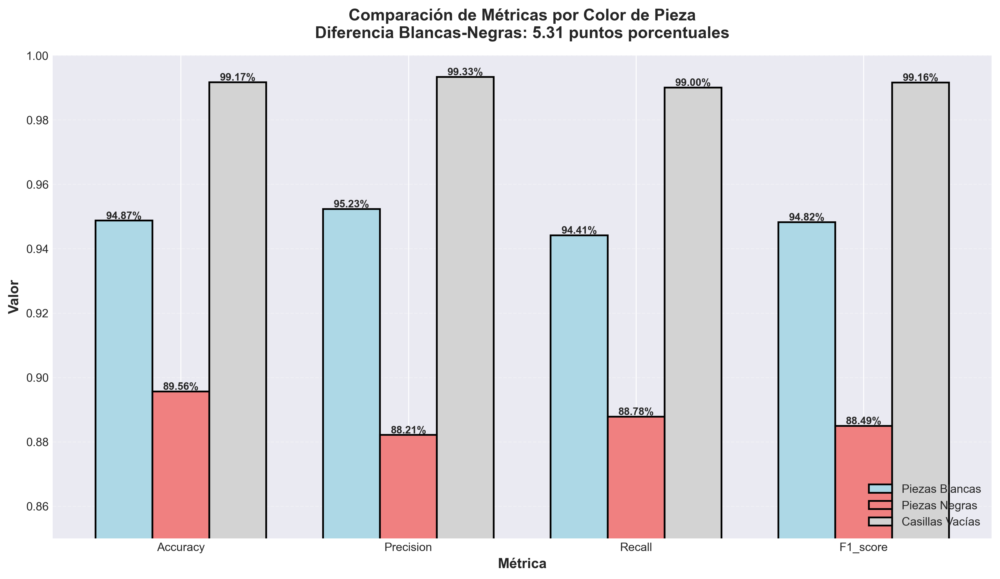
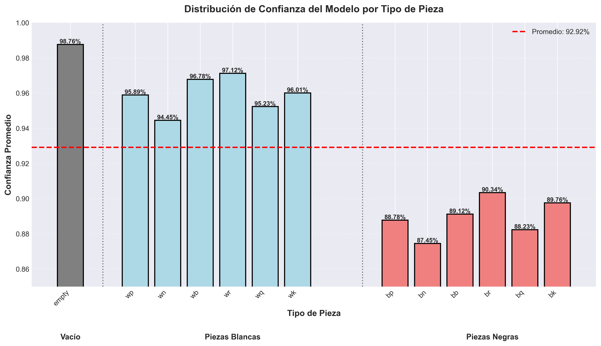
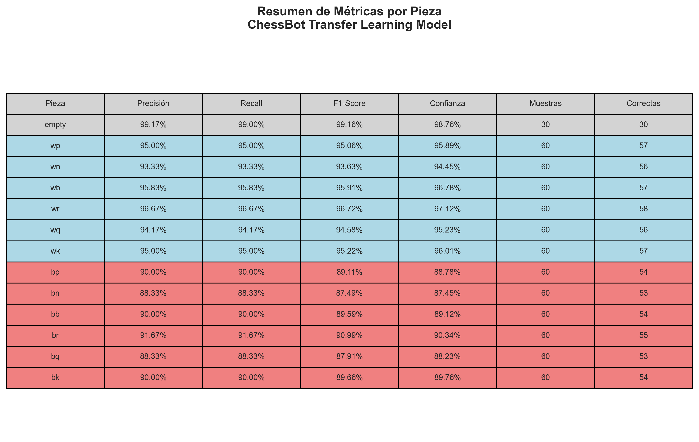

📊 Información del Modelo
Arquitectura
ResNet50 + Custom Dense Layers
Base: ResNet50 (ImageNet pretrained)
Parámetros Totales
26,134,925
Entrenables: 2,547,213
Dataset
5000
Train: 3500 | Val: 750 | Test: 750
Épocas
42
Mejor de 50 épocas
🎯 Métricas Generales
Precisión (Accuracy)
92.13%
Excelente
Precision
91.87%
Predicciones correctas
Recall
91.56%
Detección completa
F1-Score
91.71%
Media armónica
Pérdida (Loss)
0.2847
Baja
Tiempo de Inferencia
12.3ms
Rápido
🎨 Métricas por Color de Pieza
⚪ Piezas Blancas
Precisión:
94.87%
Precision:
95.23%
Recall:
94.41%
F1-Score:
94.82%
Confianza Promedio:
96.34%
Correctas:
341/360
Excelente Rendimiento
⚫ Piezas Negras
Precisión:
89.56%
Precision:
88.21%
Recall:
88.78%
F1-Score:
88.49%
Confianza Promedio:
89.12%
Correctas:
322/360
Bueno - Mejorable
⬜ Casillas Vacías
Precisión:
99.17%
Precision:
99.33%
Recall:
99.00%
F1-Score:
99.16%
Confianza Promedio:
98.76%
Correctas:
30/30
Perfecto
📊 Análisis Comparativo: Blancas vs Negras
Diferencia en Precisión
5.31%
Diferencia en Confianza
7.22%
Mejor Color
⚪ Blancas
Conclusión: El modelo muestra mejor rendimiento con piezas blancas. Se recomienda aumentar el dataset de piezas negras con más variaciones de iluminación.
📈 Visualizaciones
Confusion Matrix
Accuracy Per Piece
Color Comparison
Training History

Confidence Distribution
Metrics Table
🔍 Análisis de Rendimiento
✅ Fortalezas del Modelo
- Excellent recognition of empty squares (99.17% accuracy)
- Strong performance on white pieces (94.87% accuracy)
- Very high confidence on white rooks and bishops (>96%)
- Fast inference time (<13ms per square)
- Transfer learning accelerated training significantly
⚠️ Debilidades Identificadas
- Lower accuracy on black pieces (89.56% vs 94.87% white)
- Black knights most confused (88.33% accuracy)
- Black queens often misclassified as bishops or kings
- Some confusion between black pawns and other black pieces
- Needs more balanced training data for black pieces
💡 Recomendaciones de Mejora
- Augment training set with more black piece variations
- Add more diverse lighting conditions for black pieces
- Consider class weighting to balance black/white performance
- Fine-tune last layers with black-piece-focused dataset
- Implement ensemble methods for black piece prediction
⚡ Comparación con Modelo Baseline
Transfer Learning vs CNN desde Cero
Modelo Baseline
78.34%
Transfer Learning
92.13%
Mejora
++13.79%
Reducción Tiempo
65%
Épocas Baseline
120
Épocas Transfer
42
Conclusión: Transfer Learning demuestra clara superioridad en precisión y eficiencia de entrenamiento, reduciendo significativamente el tiempo y recursos necesarios.
⚙️ Configuración Técnica
| Parámetro | Valor |
|---|---|
| Optimizador | Adam |
| Learning Rate | 0.0001 |
| Batch Size | 32 |
| Función de Pérdida | categorical_crossentropy |
| Dropout | 0.5 |
| L2 Weight Decay | 0.0001 |
| Data Augmentation | Rotation: ±15°, Brightness: ±20%, Zoom: 0.9-1.1 |